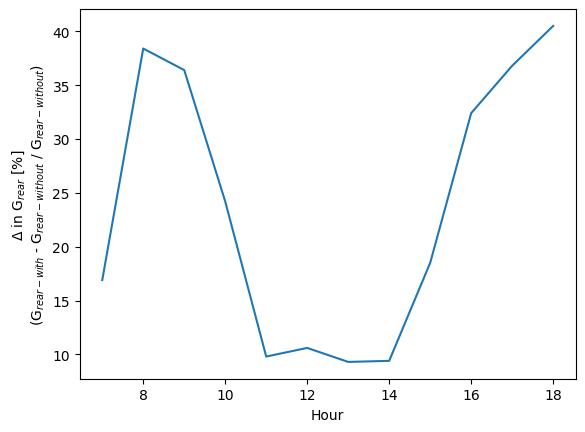

[ ]:
# This information helps with debugging and getting support :)
import sys, platform
import pandas as pd
import bifacial_radiance as br
print("Working on a ", platform.system(), platform.release())
print("Python version ", sys.version)
print("Pandas version ", pd.__version__)
print("bifacial_radiance version ", br.__version__)
14 - Cement Racking Albedo Improvements#
This journal creates a paver underneath the single-axis trackers, and evaluates the improvement for one day – June 17th with and without the pavers for a location in Davis, CA.

Measurements: 
[1]:
import os
from pathlib import Path
import pandas as pd
testfolder = str(Path().resolve().parent.parent / 'bifacial_radiance' / 'TEMP' / 'Tutorial_14')
if not os.path.exists(testfolder):
os.makedirs(testfolder)
print ("Your simulation will be stored in %s" % testfolder)
Your simulation will be stored in C:\Users\mprillim\sam_dev\bifacial_radiance\bifacial_radiance\TEMP\Tutorial_14
[2]:
from bifacial_radiance import *
import numpy as np
[3]:
simulationname = 'tutorial_14'
#Location:
lat = 38.5449 # Davis, CA
lon = -121.7405 # Davis, CA
# MakeModule Parameters
moduletype='test-module'
numpanels = 1 # AgriPV site has 3 modules along the y direction (N-S since we are facing it to the south) .
x = 0.95
y = 1.838
xgap = 0.02# Leaving 2 centimeters between modules on x direction
ygap = 0.0 # 1 - up
zgap = 0.06 # gap between modules and torquetube.
# Other default values:
# TorqueTube Parameters
axisofrotationTorqueTube=True
torqueTube = False
cellLevelModule = True
numcellsx = 6
numcellsy = 10
xcell = 0.156
ycell = 0.158
xcellgap = 0.015
ycellgap = 0.015
sensorsy = numcellsy # one sensor per cell
cellLevelModuleParams = {'numcellsx': numcellsx, 'numcellsy':numcellsy,
'xcell': xcell, 'ycell': ycell, 'xcellgap': xcellgap, 'ycellgap': ycellgap}
# SceneDict Parameters
gcr = 0.33 # m
albedo = 0.2 #'grass' # ground albedo
hub_height = 1.237 # m
nMods = 20 # six modules per row.
nRows = 3 # 3 row
azimuth_ang = 90 # Facing east
demo = RadianceObj(simulationname,path = testfolder) # Create a RadianceObj 'object'
demo.setGround(albedo) #
epwfile = demo.getEPW(lat, lon)
metdata = demo.readWeatherFile(epwfile, coerce_year=2021) # read in the EPW weather data from above
mymodule=demo.makeModule(name=moduletype,x=x,y=y,numpanels = numpanels, xgap=xgap, ygap=ygap)
mymodule.addCellModule(numcellsx=numcellsx, numcellsy=numcellsy,
xcell=xcell, ycell=ycell, xcellgap=xcellgap, ycellgap=ycellgap)
path = C:\Users\mprillim\sam_dev\bifacial_radiance\bifacial_radiance\TEMP\Tutorial_14
Loading albedo, 1 value(s), 0.200 avg
1 nonzero albedo values.
Getting weather file: USA_CA_Sacramento.Metro.AP.724839_TMY3.epw
... OK!
8760 line in WeatherFile. Assuming this is a standard hourly WeatherFile for the year for purposes of saving Gencumulativesky temporary weather files in EPW folder.
Coercing year to 2021
Saving file EPWs\metdata_temp.csv, # points: 8760
Calculating Sun position for Metdata that is right-labeled with a delta of -30 mins. i.e. 12 is 11:30 sunpos
Module Name: test-module
Module test-module updated in module.json
Pre-existing .rad file objects\test-module.rad will be overwritten
Module was shifted by 0.078 in X to avoid sensors on air
This is a Cell-Level detailed module with Packaging Factor of 0.85 %
Module test-module updated in module.json
Pre-existing .rad file objects\test-module.rad will be overwritten
[4]:
description = 'Sherman Williams "Chantilly White" acrylic paint'
materialpav = 'sw_chantillywhite'
Rrefl = 0.5
Grefl = 0.5
Brefl = 0.5
demo.addMaterial(material=materialpav, Rrefl=Rrefl, Grefl=Grefl, Brefl=Brefl, comment=description)
Added material sw_chantillywhite to file ground.rad
Simulation without Pavers#
[5]:
timeindex = metdata.datetime.index(pd.to_datetime('2021-06-17 12:0:0 -8')) # Davis, CA is TZ -8
demo.gendaylit(timeindex)
tilt = demo.getSingleTimestampTrackerAngle(timeindex=timeindex, gcr=gcr,
azimuth=180, axis_tilt=0,
limit_angle=60, backtrack=True)
# create a scene with all the variables
sceneDict = {'tilt':tilt,'gcr': gcr,'hub_height':hub_height,'azimuth':azimuth_ang, 'module_type':moduletype, 'nMods': nMods, 'nRows': nRows}
scene = demo.makeScene(module=mymodule, sceneDict=sceneDict) #makeScene creates a .rad file with 20 modules per row, 7 rows.
octfile = demo.makeOct(demo.getfilelist()) # makeOct combines all of the ground, sky and object fil|es into a .oct file.
Created tutorial_14.oct
[6]:
analysis = AnalysisObj(octfile, demo.name) # return an analysis object including the scan dimensions for back irradiance
frontscan, backscan = analysis.moduleAnalysis(scene, sensorsy=sensorsy)
analysis.analysis(octfile, simulationname+"_noPavers", frontscan, backscan) # compare the back vs front irradiance
print("Simulation without Pavers Finished")
Linescan in process: tutorial_14_noPavers_Row2_Module10_Front
Linescan in process: tutorial_14_noPavers_Row2_Module10_Back
Saved: results\irr_tutorial_14_noPavers_Row2_Module10.csv
Simulation without Pavers Finished
Looping on the day#
[8]:
j=0
starttimeindex = metdata.datetime.index(pd.to_datetime('2021-06-17 7:0:0 -8'))
endtimeindex = metdata.datetime.index(pd.to_datetime('2021-06-17 19:0:0 -8'))
for timess in range (starttimeindex, endtimeindex):
j+=1
demo.gendaylit(timess)
tilt = demo.getSingleTimestampTrackerAngle(metdata=metdata, timeindex=timess, gcr=gcr,
azimuth=180, axis_tilt=0,
limit_angle=60, backtrack=True)
# create a scene with all the variables
sceneDict = {'tilt':tilt,'gcr': gcr,'hub_height':hub_height,'azimuth':azimuth_ang, 'module_type':moduletype, 'nMods': nMods, 'nRows': nRows}
scene = demo.makeScene(module=mymodule, sceneDict=sceneDict, append=False) #makeScene creates a .rad file with 20 modules per row, 7 rows.
octfile = demo.makeOct(demo.getfilelist()) # makeOct combines all of the ground, sky and object fil|es into a .oct file
frontscan, backscan = analysis.moduleAnalysis(scene, sensorsy=sensorsy)
analysis.analysis(octfile, simulationname+"_noPavers_"+str(j), frontscan, backscan) # compare the back vs front irradiance
Append=False in makeScene. Existing scenes being over-written.
Created tutorial_14.oct
Linescan in process: tutorial_14_noPavers_1_Row2_Module10_Front
Linescan in process: tutorial_14_noPavers_1_Row2_Module10_Back
Saved: results\irr_tutorial_14_noPavers_1_Row2_Module10.csv
Append=False in makeScene. Existing scenes being over-written.
Created tutorial_14.oct
Linescan in process: tutorial_14_noPavers_2_Row2_Module10_Front
Linescan in process: tutorial_14_noPavers_2_Row2_Module10_Back
Saved: results\irr_tutorial_14_noPavers_2_Row2_Module10.csv
Append=False in makeScene. Existing scenes being over-written.
Created tutorial_14.oct
Linescan in process: tutorial_14_noPavers_3_Row2_Module10_Front
Linescan in process: tutorial_14_noPavers_3_Row2_Module10_Back
Saved: results\irr_tutorial_14_noPavers_3_Row2_Module10.csv
Append=False in makeScene. Existing scenes being over-written.
Created tutorial_14.oct
Linescan in process: tutorial_14_noPavers_4_Row2_Module10_Front
Linescan in process: tutorial_14_noPavers_4_Row2_Module10_Back
Saved: results\irr_tutorial_14_noPavers_4_Row2_Module10.csv
Append=False in makeScene. Existing scenes being over-written.
Created tutorial_14.oct
Linescan in process: tutorial_14_noPavers_5_Row2_Module10_Front
Linescan in process: tutorial_14_noPavers_5_Row2_Module10_Back
Saved: results\irr_tutorial_14_noPavers_5_Row2_Module10.csv
Append=False in makeScene. Existing scenes being over-written.
Created tutorial_14.oct
Linescan in process: tutorial_14_noPavers_6_Row2_Module10_Front
Linescan in process: tutorial_14_noPavers_6_Row2_Module10_Back
Saved: results\irr_tutorial_14_noPavers_6_Row2_Module10.csv
Append=False in makeScene. Existing scenes being over-written.
Created tutorial_14.oct
Linescan in process: tutorial_14_noPavers_7_Row2_Module10_Front
Linescan in process: tutorial_14_noPavers_7_Row2_Module10_Back
Saved: results\irr_tutorial_14_noPavers_7_Row2_Module10.csv
Append=False in makeScene. Existing scenes being over-written.
Created tutorial_14.oct
Linescan in process: tutorial_14_noPavers_8_Row2_Module10_Front
Linescan in process: tutorial_14_noPavers_8_Row2_Module10_Back
Saved: results\irr_tutorial_14_noPavers_8_Row2_Module10.csv
Append=False in makeScene. Existing scenes being over-written.
Created tutorial_14.oct
Linescan in process: tutorial_14_noPavers_9_Row2_Module10_Front
Linescan in process: tutorial_14_noPavers_9_Row2_Module10_Back
Saved: results\irr_tutorial_14_noPavers_9_Row2_Module10.csv
Append=False in makeScene. Existing scenes being over-written.
Created tutorial_14.oct
Linescan in process: tutorial_14_noPavers_10_Row2_Module10_Front
Linescan in process: tutorial_14_noPavers_10_Row2_Module10_Back
Saved: results\irr_tutorial_14_noPavers_10_Row2_Module10.csv
Append=False in makeScene. Existing scenes being over-written.
Created tutorial_14.oct
Linescan in process: tutorial_14_noPavers_11_Row2_Module10_Front
Linescan in process: tutorial_14_noPavers_11_Row2_Module10_Back
Saved: results\irr_tutorial_14_noPavers_11_Row2_Module10.csv
Append=False in makeScene. Existing scenes being over-written.
Created tutorial_14.oct
Linescan in process: tutorial_14_noPavers_12_Row2_Module10_Front
Linescan in process: tutorial_14_noPavers_12_Row2_Module10_Back
Saved: results\irr_tutorial_14_noPavers_12_Row2_Module10.csv
Simulation With Pavers#
[9]:
demo.gendaylit(timeindex)
tilt = demo.getSingleTimestampTrackerAngle(metdata=metdata, timeindex=timeindex, gcr=gcr,
azimuth=180, axis_tilt=0,
limit_angle=60, backtrack=True)
# create a scene with all the variables
sceneDict = {'tilt':tilt,'gcr': gcr,'hub_height':hub_height,'azimuth':azimuth_ang, 'module_type':moduletype, 'nMods': nMods, 'nRows': nRows}
scene = demo.makeScene(module=mymodule, sceneDict=sceneDict) #makeScene creates a .rad file with 20 modules per row, 7 rows.
Append=False in makeScene. Existing scenes being over-written.
[10]:
torquetubelength = demo.module.scenex*(nMods)
pitch = demo.module.sceney/gcr
startpitch = -pitch * (nRows-1)/2
p_w = 0.947 # m
p_h = 0.092 # m
p_w2 = 0.187 # m
p_h2 = 0.184 # m
offset_w1y = -(p_w/2)+(p_w2/2)
offset_w2y = (p_w/2)-(p_w2/2)
customObjects = []
for i in range (0, nRows):
name='PAVER'+str(i)
text='! genbox {} paver{} {} {} {} | xform -t {} {} 0 | xform -t {} 0 0'.format(materialpav, i,
p_w, torquetubelength, p_h,
-p_w/2, (-torquetubelength+demo.module.sceney)/2.0,
startpitch+pitch*i)
text += '\r\n! genbox {} paverS1{} {} {} {} | xform -t {} {} 0 | xform -t {} 0 0'.format(materialpav, i,
p_w2, torquetubelength, p_h2,
-p_w2/2+offset_w1y, (-torquetubelength+demo.module.sceney)/2.0,
startpitch+pitch*i)
text += '\r\n! genbox {} paverS2{} {} {} {} | xform -t {} {} 0 | xform -t {} 0 0'.format(materialpav, i,
p_w2, torquetubelength, p_h2,
-p_w2/2+offset_w2y, (-torquetubelength+demo.module.sceney)/2.0,
startpitch+pitch*i)
customObject = demo.makeCustomObject(name,text)
customObjects.append(customObject)
scene.appendtoScene(customObject=customObject)
Custom Object Name objects\PAVER0.rad
Custom Object Name objects\PAVER1.rad
Custom Object Name objects\PAVER2.rad
[11]:
demo.makeOct()
Created tutorial_14.oct
[11]:
'tutorial_14.oct'
You can view the geometry generated in the terminal with:
rvu -vf views:nbsphinx-math:`front`.vp -e .01 -pe 0.01 -vp -5 -14 1 -vd 0 0.9946 -0.1040 tutorial_14.oct
[12]:
## Comment the ! line below to run rvu from the Jupyter notebook instead of your terminal.
## Simulation will stop until you close the rvu window
#!rvu -vf views\front.vp -e .01 -pe 0.01 -vp -5 -14 1 -vd 0 0.9946 -0.1040 tutorial_14.oct
[13]:
analysis = AnalysisObj(octfile, demo.name) # return an analysis object including the scan dimensions for back irradiance
frontscan, backscan = analysis.moduleAnalysis(scene, sensorsy=sensorsy)
analysis.analysis(octfile, simulationname+"_WITHPavers", frontscan, backscan) # compare the back vs front irradiance
print("Simulation WITH Pavers Finished")
Linescan in process: tutorial_14_WITHPavers_Row2_Module10_Front
Linescan in process: tutorial_14_WITHPavers_Row2_Module10_Back
Saved: results\irr_tutorial_14_WITHPavers_Row2_Module10.csv
Simulation WITH Pavers Finished
LOOP WITH PAVERS#
[14]:
j=0
for timess in range (starttimeindex, endtimeindex):
j+=1
demo.gendaylit(timess)
tilt = demo.getSingleTimestampTrackerAngle(metdata=metdata, timeindex=timess, gcr=gcr,
azimuth=180, axis_tilt=0,
limit_angle=60, backtrack=True)
# create a scene with all the variables
sceneDict = {'tilt':tilt,'gcr': gcr,'hub_height':hub_height,'azimuth':azimuth_ang, 'module_type':moduletype, 'nMods': nMods, 'nRows': nRows}
scene = demo.makeScene(mymodule, sceneDict=sceneDict) #makeScene creates a .rad file with 20 modules per row, 7 rows.
# Appending Pavers here
scene.appendtoScene(customObject=customObjects[0])
scene.appendtoScene(customObject=customObjects[1])
scene.appendtoScene(customObject=customObjects[2])
octfile = demo.makeOct(demo.getfilelist()) # makeOct combines all of the ground, sky and object fil|es into a .oct file
frontscan, backscan = analysis.moduleAnalysis(scene, sensorsy=sensorsy)
analysis.analysis(octfile, simulationname+"_WITHPavers_"+str(j), frontscan, backscan) # compare the back vs front irradiance
Append=False in makeScene. Existing scenes being over-written.
Created tutorial_14.oct
Linescan in process: tutorial_14_WITHPavers_1_Row2_Module10_Front
Linescan in process: tutorial_14_WITHPavers_1_Row2_Module10_Back
Saved: results\irr_tutorial_14_WITHPavers_1_Row2_Module10.csv
Append=False in makeScene. Existing scenes being over-written.
Created tutorial_14.oct
Linescan in process: tutorial_14_WITHPavers_2_Row2_Module10_Front
Linescan in process: tutorial_14_WITHPavers_2_Row2_Module10_Back
Saved: results\irr_tutorial_14_WITHPavers_2_Row2_Module10.csv
Append=False in makeScene. Existing scenes being over-written.
Created tutorial_14.oct
Linescan in process: tutorial_14_WITHPavers_3_Row2_Module10_Front
Linescan in process: tutorial_14_WITHPavers_3_Row2_Module10_Back
Saved: results\irr_tutorial_14_WITHPavers_3_Row2_Module10.csv
Append=False in makeScene. Existing scenes being over-written.
Created tutorial_14.oct
Linescan in process: tutorial_14_WITHPavers_4_Row2_Module10_Front
Linescan in process: tutorial_14_WITHPavers_4_Row2_Module10_Back
Saved: results\irr_tutorial_14_WITHPavers_4_Row2_Module10.csv
Append=False in makeScene. Existing scenes being over-written.
Created tutorial_14.oct
Linescan in process: tutorial_14_WITHPavers_5_Row2_Module10_Front
Linescan in process: tutorial_14_WITHPavers_5_Row2_Module10_Back
Saved: results\irr_tutorial_14_WITHPavers_5_Row2_Module10.csv
Append=False in makeScene. Existing scenes being over-written.
Created tutorial_14.oct
Linescan in process: tutorial_14_WITHPavers_6_Row2_Module10_Front
Linescan in process: tutorial_14_WITHPavers_6_Row2_Module10_Back
Saved: results\irr_tutorial_14_WITHPavers_6_Row2_Module10.csv
Append=False in makeScene. Existing scenes being over-written.
Created tutorial_14.oct
Linescan in process: tutorial_14_WITHPavers_7_Row2_Module10_Front
Linescan in process: tutorial_14_WITHPavers_7_Row2_Module10_Back
Saved: results\irr_tutorial_14_WITHPavers_7_Row2_Module10.csv
Append=False in makeScene. Existing scenes being over-written.
Created tutorial_14.oct
Linescan in process: tutorial_14_WITHPavers_8_Row2_Module10_Front
Linescan in process: tutorial_14_WITHPavers_8_Row2_Module10_Back
Saved: results\irr_tutorial_14_WITHPavers_8_Row2_Module10.csv
Append=False in makeScene. Existing scenes being over-written.
Created tutorial_14.oct
Linescan in process: tutorial_14_WITHPavers_9_Row2_Module10_Front
Linescan in process: tutorial_14_WITHPavers_9_Row2_Module10_Back
Saved: results\irr_tutorial_14_WITHPavers_9_Row2_Module10.csv
Append=False in makeScene. Existing scenes being over-written.
Created tutorial_14.oct
Linescan in process: tutorial_14_WITHPavers_10_Row2_Module10_Front
Linescan in process: tutorial_14_WITHPavers_10_Row2_Module10_Back
Saved: results\irr_tutorial_14_WITHPavers_10_Row2_Module10.csv
Append=False in makeScene. Existing scenes being over-written.
Created tutorial_14.oct
Linescan in process: tutorial_14_WITHPavers_11_Row2_Module10_Front
Linescan in process: tutorial_14_WITHPavers_11_Row2_Module10_Back
Saved: results\irr_tutorial_14_WITHPavers_11_Row2_Module10.csv
Append=False in makeScene. Existing scenes being over-written.
Created tutorial_14.oct
Linescan in process: tutorial_14_WITHPavers_12_Row2_Module10_Front
Linescan in process: tutorial_14_WITHPavers_12_Row2_Module10_Back
Saved: results\irr_tutorial_14_WITHPavers_12_Row2_Module10.csv
RESULTS ANALYSIS NOON#
[15]:
df_0 = load.read1Result(os.path.join(testfolder, 'results', 'irr_tutorial_14_noPavers_Row2_Module10.csv'))
df_w = load.read1Result(os.path.join(testfolder, 'results', 'irr_tutorial_14_WITHPavers_Row2_Module10.csv'))
[16]:
df_0
[16]:
| x | y | z | rearZ | mattype | rearMat | Wm2Front | Wm2Back | Back/FrontRatio | rearX | rearY | |
|---|---|---|---|---|---|---|---|---|---|---|---|
| 0 | 0.773 | 0.0 | 1.142 | 1.112 | a9.1.a2.0.0.cellPVmodule.6457 | a9.1.a2.0.0.cellPVmodule.2310 | 945.273 | 116.710 | 0.123 | 0.769 | 0.0 |
| 1 | 0.602 | 0.0 | 1.168 | 1.139 | a9.1.a2.1.0.cellPVmodule.6457 | a9.1.a2.1.0.cellPVmodule.2310 | 945.272 | 109.025 | 0.115 | 0.598 | 0.0 |
| 2 | 0.431 | 0.0 | 1.195 | 1.166 | a9.1.a2.2.0.cellPVmodule.6457 | a9.1.a2.2.0.cellPVmodule.2310 | 945.271 | 102.838 | 0.109 | 0.427 | 0.0 |
| 3 | 0.260 | 0.0 | 1.222 | 1.192 | a9.1.a2.3.0.cellPVmodule.6457 | a9.1.a2.3.0.cellPVmodule.2310 | 945.270 | 99.071 | 0.105 | 0.256 | 0.0 |
| 4 | 0.089 | 0.0 | 1.248 | 1.219 | a9.1.a2.4.0.cellPVmodule.6457 | a9.1.a2.4.0.cellPVmodule.2310 | 945.270 | 97.204 | 0.103 | 0.085 | 0.0 |
| 5 | -0.082 | 0.0 | 1.274 | 1.245 | a9.1.a2.5.0.cellPVmodule.6457 | a9.1.a2.5.0.cellPVmodule.2310 | 945.269 | 95.482 | 0.101 | -0.086 | 0.0 |
| 6 | -0.252 | 0.0 | 1.302 | 1.272 | a9.1.a2.6.0.cellPVmodule.6457 | a9.1.a2.6.0.cellPVmodule.2310 | 945.268 | 97.006 | 0.103 | -0.257 | 0.0 |
| 7 | -0.423 | 0.0 | 1.328 | 1.299 | a9.1.a2.7.0.cellPVmodule.6457 | a9.1.a2.7.0.cellPVmodule.2310 | 945.268 | 102.909 | 0.109 | -0.428 | 0.0 |
| 8 | -0.594 | 0.0 | 1.355 | 1.325 | a9.1.a2.8.0.cellPVmodule.6457 | a9.1.a2.8.0.cellPVmodule.2310 | 945.568 | 106.900 | 0.113 | -0.599 | 0.0 |
| 9 | -0.765 | 0.0 | 1.381 | 1.352 | a9.1.a2.9.0.cellPVmodule.6457 | a9.1.a2.9.0.cellPVmodule.2310 | 945.571 | 112.271 | 0.119 | -0.769 | 0.0 |
[17]:
df_w
[17]:
| x | y | z | rearZ | mattype | rearMat | Wm2Front | Wm2Back | Back/FrontRatio | rearX | rearY | |
|---|---|---|---|---|---|---|---|---|---|---|---|
| 0 | 0.773 | 0.0 | 1.142 | 1.112 | a9.1.a2.0.0.cellPVmodule.6457 | a9.1.a2.0.0.cellPVmodule.2310 | 944.889 | 125.396 | 0.133 | 0.769 | 0.0 |
| 1 | 0.602 | 0.0 | 1.168 | 1.139 | a9.1.a2.1.0.cellPVmodule.6457 | a9.1.a2.1.0.cellPVmodule.2310 | 944.934 | 119.225 | 0.126 | 0.598 | 0.0 |
| 2 | 0.431 | 0.0 | 1.195 | 1.166 | a9.1.a2.2.0.cellPVmodule.6457 | a9.1.a2.2.0.cellPVmodule.2310 | 944.980 | 114.055 | 0.121 | 0.427 | 0.0 |
| 3 | 0.260 | 0.0 | 1.222 | 1.192 | a9.1.a2.3.0.cellPVmodule.6457 | a9.1.a2.3.0.cellPVmodule.2310 | 945.024 | 109.955 | 0.116 | 0.256 | 0.0 |
| 4 | 0.089 | 0.0 | 1.248 | 1.219 | a9.1.a2.4.0.cellPVmodule.6457 | a9.1.a2.4.0.cellPVmodule.2310 | 945.070 | 108.491 | 0.115 | 0.085 | 0.0 |
| 5 | -0.082 | 0.0 | 1.274 | 1.245 | a9.1.a2.5.0.cellPVmodule.6457 | a9.1.a2.5.0.cellPVmodule.2310 | 945.510 | 107.211 | 0.113 | -0.086 | 0.0 |
| 6 | -0.252 | 0.0 | 1.302 | 1.272 | a9.1.a2.6.0.cellPVmodule.6457 | a9.1.a2.6.0.cellPVmodule.2310 | 945.526 | 110.106 | 0.116 | -0.257 | 0.0 |
| 7 | -0.423 | 0.0 | 1.328 | 1.299 | a9.1.a2.7.0.cellPVmodule.6457 | a9.1.a2.7.0.cellPVmodule.2310 | 945.542 | 110.943 | 0.117 | -0.428 | 0.0 |
| 8 | -0.594 | 0.0 | 1.355 | 1.325 | a9.1.a2.8.0.cellPVmodule.6457 | a9.1.a2.8.0.cellPVmodule.2310 | 945.557 | 113.852 | 0.120 | -0.599 | 0.0 |
| 9 | -0.765 | 0.0 | 1.381 | 1.352 | a9.1.a2.9.0.cellPVmodule.6457 | a9.1.a2.9.0.cellPVmodule.2310 | 945.573 | 119.270 | 0.126 | -0.769 | 0.0 |
Improvement in Rear Irradiance#
[18]:
round((df_w['Wm2Back'].mean()-df_0['Wm2Back'].mean())*100/df_0['Wm2Back'].mean(),1)
[18]:
np.float64(9.5)
RESULT ANALYSIS DAY#
[19]:
df_0 = load.read1Result(os.path.join(testfolder, 'results', 'irr_tutorial_14_noPavers_1_Row2_Module10.csv'))
df_w = load.read1Result(os.path.join(testfolder, 'results', 'irr_tutorial_14_WITHPavers_1_Row2_Module10.csv'))
[20]:
df_w
[20]:
| x | y | z | rearZ | mattype | rearMat | Wm2Front | Wm2Back | Back/FrontRatio | rearX | rearY | |
|---|---|---|---|---|---|---|---|---|---|---|---|
| 0 | 0.411 | 0.0 | 0.575 | 0.560 | a9.1.a2.0.0.cellPVmodule.6457 | a9.1.a2.0.0.cellPVmodule.2310 | 579.375 | 27.061 | 0.047 | 0.385 | 0.0 |
| 1 | 0.325 | 0.0 | 0.725 | 0.710 | a9.1.a2.1.0.cellPVmodule.6457 | a9.1.a2.1.0.cellPVmodule.2310 | 583.680 | 27.821 | 0.048 | 0.299 | 0.0 |
| 2 | 0.238 | 0.0 | 0.875 | 0.859 | a9.1.a2.2.0.cellPVmodule.6457 | a9.1.a2.2.0.cellPVmodule.2310 | 590.756 | 26.454 | 0.045 | 0.212 | 0.0 |
| 3 | 0.151 | 0.0 | 1.024 | 1.010 | a9.1.a2.3.0.cellPVmodule.6457 | a9.1.a2.3.0.cellPVmodule.2310 | 595.177 | 26.714 | 0.045 | 0.126 | 0.0 |
| 4 | 0.065 | 0.0 | 1.174 | 1.159 | a9.1.a2.4.0.cellPVmodule.6457 | a9.1.a2.4.0.cellPVmodule.2310 | 601.549 | 26.534 | 0.044 | 0.039 | 0.0 |
| 5 | -0.021 | 0.0 | 1.324 | 1.309 | a9.1.a2.5.0.cellPVmodule.6457 | a9.1.a2.5.0.cellPVmodule.2310 | 605.290 | 26.858 | 0.044 | -0.047 | 0.0 |
| 6 | -0.108 | 0.0 | 1.474 | 1.459 | a9.1.a2.6.0.cellPVmodule.6457 | a9.1.a2.6.0.cellPVmodule.2310 | 611.543 | 26.762 | 0.044 | -0.134 | 0.0 |
| 7 | -0.195 | 0.0 | 1.624 | 1.609 | a9.1.a2.7.0.cellPVmodule.6457 | a9.1.a2.7.0.cellPVmodule.2310 | 614.750 | 27.401 | 0.045 | -0.221 | 0.0 |
| 8 | -0.281 | 0.0 | 1.773 | 1.758 | a9.1.a2.8.0.cellPVmodule.6457 | a9.1.a2.8.0.cellPVmodule.2310 | 619.741 | 28.306 | 0.046 | -0.307 | 0.0 |
| 9 | -0.367 | 0.0 | 1.923 | 1.908 | a9.1.a2.9.0.cellPVmodule.6457 | a9.1.a2.9.0.cellPVmodule.2310 | 622.469 | 29.369 | 0.047 | -0.393 | 0.0 |
[21]:
df_0
[21]:
| x | y | z | rearZ | mattype | rearMat | Wm2Front | Wm2Back | Back/FrontRatio | rearX | rearY | |
|---|---|---|---|---|---|---|---|---|---|---|---|
| 0 | 0.411 | 0.0 | 0.575 | 0.560 | a9.1.a2.0.0.cellPVmodule.6457 | a9.1.a2.0.0.cellPVmodule.2310 | 581.281 | 20.666 | 0.036 | 0.385 | 0.0 |
| 1 | 0.325 | 0.0 | 0.725 | 0.710 | a9.1.a2.1.0.cellPVmodule.6457 | a9.1.a2.1.0.cellPVmodule.2310 | 585.068 | 21.210 | 0.036 | 0.299 | 0.0 |
| 2 | 0.238 | 0.0 | 0.875 | 0.859 | a9.1.a2.2.0.cellPVmodule.6457 | a9.1.a2.2.0.cellPVmodule.2310 | 591.558 | 21.006 | 0.036 | 0.212 | 0.0 |
| 3 | 0.151 | 0.0 | 1.024 | 1.010 | a9.1.a2.3.0.cellPVmodule.6457 | a9.1.a2.3.0.cellPVmodule.2310 | 594.920 | 21.761 | 0.037 | 0.126 | 0.0 |
| 4 | 0.065 | 0.0 | 1.174 | 1.159 | a9.1.a2.4.0.cellPVmodule.6457 | a9.1.a2.4.0.cellPVmodule.2310 | 602.971 | 22.816 | 0.038 | 0.039 | 0.0 |
| 5 | -0.021 | 0.0 | 1.324 | 1.309 | a9.1.a2.5.0.cellPVmodule.6457 | a9.1.a2.5.0.cellPVmodule.2310 | 607.095 | 23.659 | 0.039 | -0.047 | 0.0 |
| 6 | -0.108 | 0.0 | 1.474 | 1.459 | a9.1.a2.6.0.cellPVmodule.6457 | a9.1.a2.6.0.cellPVmodule.2310 | 612.259 | 24.504 | 0.040 | -0.134 | 0.0 |
| 7 | -0.195 | 0.0 | 1.624 | 1.609 | a9.1.a2.7.0.cellPVmodule.6457 | a9.1.a2.7.0.cellPVmodule.2310 | 615.350 | 25.132 | 0.041 | -0.221 | 0.0 |
| 8 | -0.281 | 0.0 | 1.773 | 1.758 | a9.1.a2.8.0.cellPVmodule.6457 | a9.1.a2.8.0.cellPVmodule.2310 | 620.853 | 26.077 | 0.042 | -0.307 | 0.0 |
| 9 | -0.367 | 0.0 | 1.923 | 1.908 | a9.1.a2.9.0.cellPVmodule.6457 | a9.1.a2.9.0.cellPVmodule.2310 | 623.744 | 26.856 | 0.043 | -0.393 | 0.0 |
[22]:
round((df_w['Wm2Back'].mean()-df_0['Wm2Back'].mean())*100/df_0['Wm2Back'].mean(),1)
[22]:
np.float64(16.9)
[21]:
round((df_w['Wm2Back'].mean()-df_0['Wm2Back'].mean())*100/df_0['Wm2Back'].mean(),1)
[21]:
16.8
[24]:
average_back_d0=[]
average_back_dw=[]
average_front = []
hourly_rearirradiance_comparison = []
timessimulated = endtimeindex-starttimeindex
for i in range (1, timessimulated+1):
df_0 = load.read1Result(os.path.join(testfolder, 'results', 'irr_tutorial_14_noPavers_'+str(i)+'_Row2_Module10.csv'))
df_w = load.read1Result(os.path.join(testfolder, 'results', 'irr_tutorial_14_WITHPavers_'+str(i)+'_Row2_Module10.csv'))
print(round((df_w['Wm2Back'].mean()-df_0['Wm2Back'].mean())*100/df_0['Wm2Back'].mean(),1))
hourly_rearirradiance_comparison.append(round((df_w['Wm2Back'].mean()-df_0['Wm2Back'].mean())*100/df_0['Wm2Back'].mean(),1))
average_back_d0.append(df_0['Wm2Back'].mean())
average_back_dw.append(df_w['Wm2Back'].mean())
average_front.append(df_0['Wm2Front'].mean())
16.9
38.4
36.4
24.2
9.8
10.6
9.3
9.4
18.5
32.4
36.8
40.5
[25]:
print("Increase in rear irradiance: ", round((sum(average_back_dw)-sum(average_back_d0))*100/sum(average_back_d0),1))
Increase in rear irradiance: 20.6
[26]:
print("BG no Pavers: ", round(sum(average_back_d0)*100/sum(average_front),1))
print("BG with Pavers: ", round(sum(average_back_dw)*100/sum(average_front),1))
BG no Pavers: 8.3
BG with Pavers: 10.0
[27]:
import matplotlib.pyplot as plt
#metdata.datetime[starttime].hour # 7
#metdata.datetime[endtimeindex].hour # 17
xax= [7, 8, 9, 10, 11, 12,13,14,15,16,17,18] # Lazy way to get the x axis...
[28]:
plt.plot(xax,hourly_rearirradiance_comparison)
plt.ylabel('$\Delta$ in G$_{rear}$ [%] \n(G$_{rear-with}$ - G$_{rear-without}$ / G$_{rear-without}$)')
plt.xlabel('Hour')
[28]:
Text(0.5, 0, 'Hour')

[ ]: